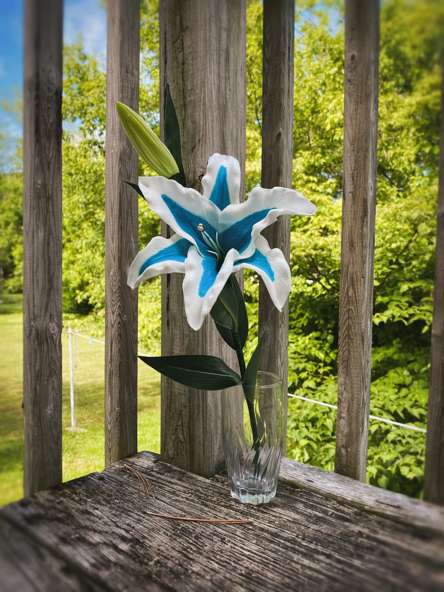

The Silent Princess (JPG Format)

About This Image
The Silent Princess is a rare flower from The Legend of Zelda: Breath of the Wild. It is known for its glowing blue center and its connection to Princess Zelda’s journey through Hyrule.
Why JPG Format?
I chose the JPG format for this image because it contains complex lighting effects and soft color gradients. JPG is the best choice for high detail images because it compresses these smooth transitions efficiently, keeping the file size small without losing visual quality.
Image source: Official Zelda Website